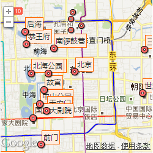
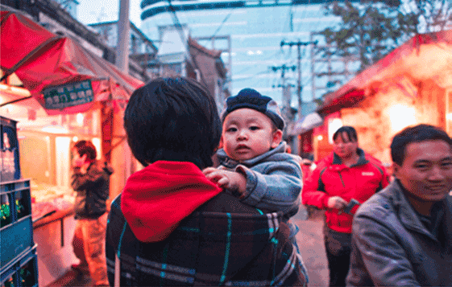
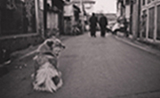
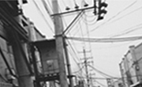
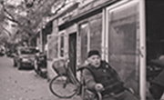
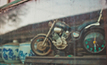
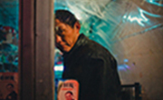

北京介绍
北京，中国的首都，一座既古典又现代的东方名城。位于华北平原西北边缘，古典在于3000多年的悠久历史、850多年的建都史和灿烂文化，现代在于SOHO现代城、三里屯酒吧街、国家大剧院、“鸟巢”和“水立方”。
地图.

北京
ZHU DI
北京，11月南城的老胡同
北京的胡同 院落
从小长大的地方 总有说不完的故事 照不完的照片
胡同长大的我 最喜欢胡同游
中秋闲暇期间照了一些关于胡同内的景色 希望大家能喜欢







猫的小岛
北京：一场为期十年的旅行
2001年来到北京，转眼已经十年。2011年，不知道这座城市在我生命里到底是一个中转站还是终点站。如果你认为生命是一次旅行的话，那么经过的每座城都像是一场或浓或淡的艳遇。我可以用照片来告诉你，我在这场际遇里看到的各种风景
关于任何城市的第一印象，大多来自于它的交通工具。首当其冲的，应该是火车站。这张照片拍摄于2007年的7月7日，亚洲最大的火车站：北京西站。我出差去西宁，在候车大厅等我当时的GF，她吵着要来送我，却比我晚到了......
未完，继续阅读→
Tathata
这个城市的秋天
扰扰攘攘中，安安静静。一样的城市，一样的秋天。他的，你的，我的，每一个人所拥有的不一样的秋天.
这个城市的秋天，在我还来不及伤感的时候，天忽然便亮了，忽然便凉了，这个秋天便窃窃的走了，还有许多没有做完的事也只好算了，去年想象的秋天不该是这样,不知明年的秋天又会为何样？所有的事都会记在心上，在这个季节听歌的时候总是难免会悲伤！